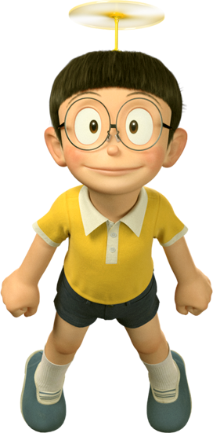
- Name: Nobita Nobi
- Age: 10
- Birht Date: August 7, 1961
- Height: 140 cm
- Skin Colour: Fair
- Eye Colour: Black
- Favorite Colour: Yellow
- Parents: Nobisuke Nobi, Tamako Nobi
Nobita Nobi, known simply as Noby (a possible
diminutive of
his Japanese name) in the American and UK versions, is the protagonist of the Doraemon
series. He was a failure of a person until Doraemon came from the 22nd century to aid
him so he could have a better future in life.
Nobita is voiced by Yoshiko Ota in the 1973 series, Noriko Ohara from 1979-March 2005,
and Megumi Ohara from April 2005 onwards.
Nobita's signature colour is yellow and he is usually represented by the colour.
Appearance
Nobita is a boy of average height with fair skin. He usually wears a yellow shirt and navy
blue shorts. He has straight black hair, black eyes and wears big round glasses.
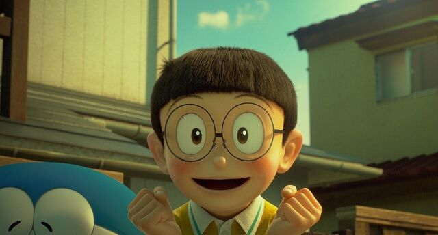
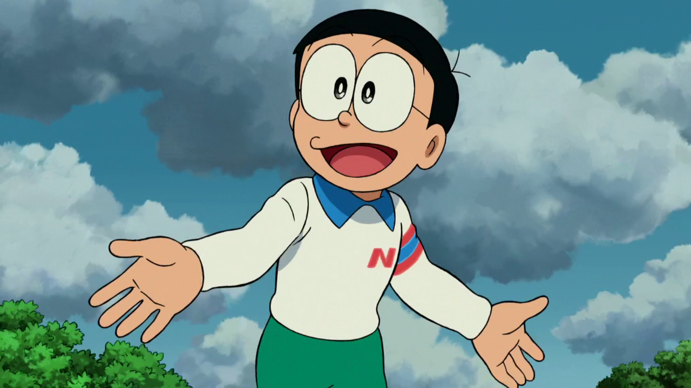
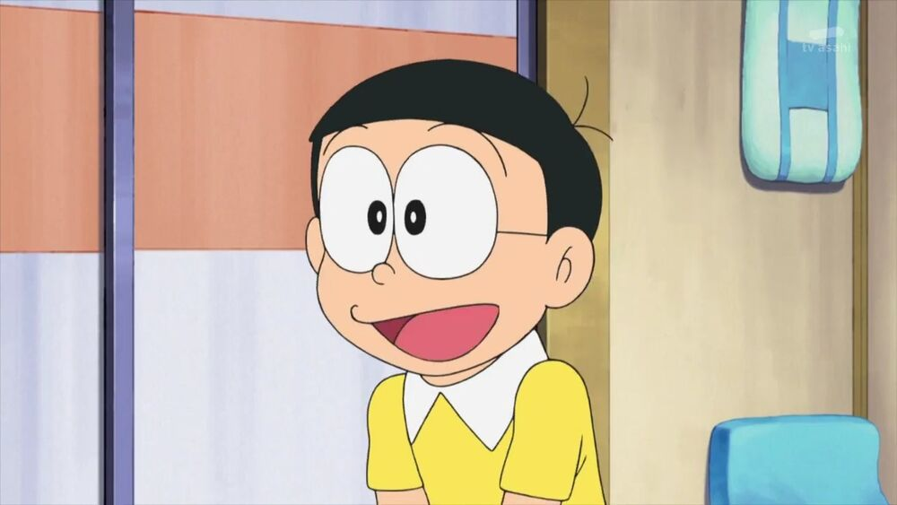
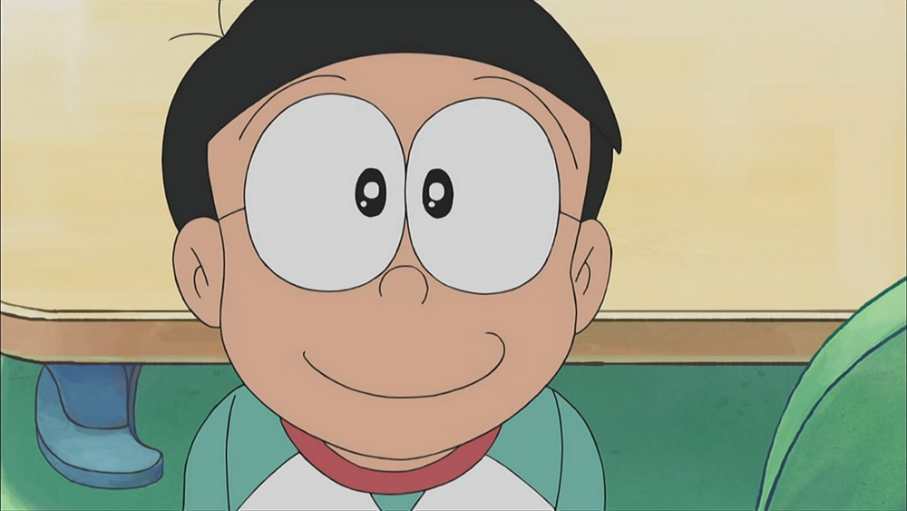
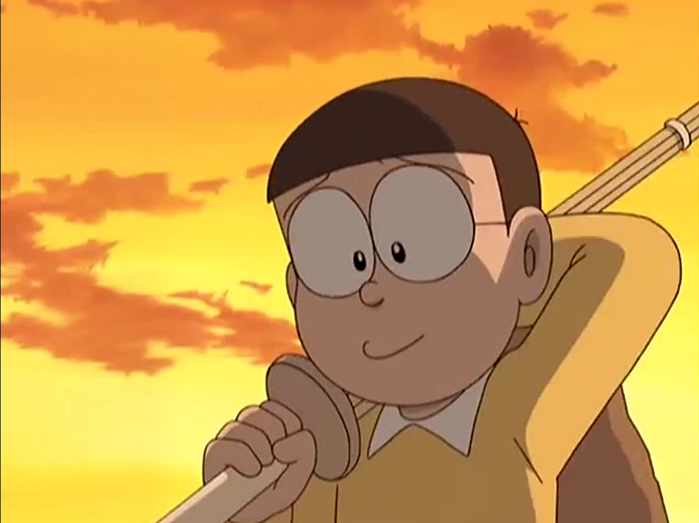
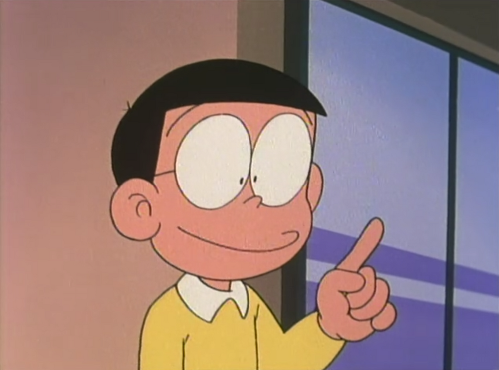
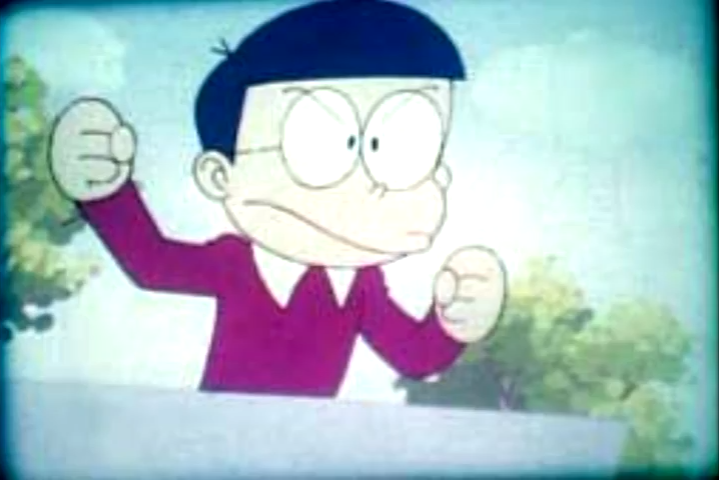
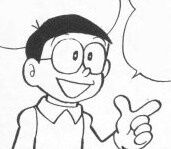
Personality and Characteristics
Nobita is the hero at best and the villain at worst. At the beginning of the series, Nobita is a rather lazy person who has a cycle of constantly napping after school, keeping him up late when he wakes up late for school. This cycle of laziness occurs almost every day, keeping him up late at night and wake up late the next morning, hindering him academically. Nobita is very dependent on Doraemon and begs for multiple things, much to his disapproval. Many things that Nobita wishes for include; vengeance on his bullies, a better product than what Suneo brags about, and privileges.
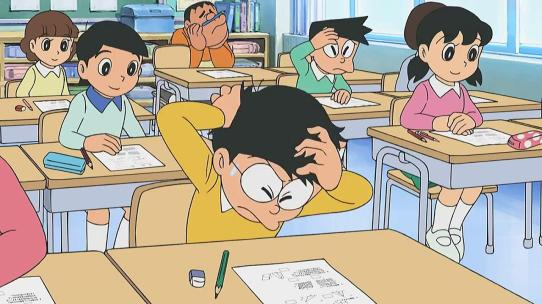
While his laziness is an issue, he slacks around in school. He regularly arrives late, is tardy with homework, and gets 0% on both exams and tests. The Classroom Teacher usually punishes him for this with after-school detentions or making him stand by the classroom door for long periods of time. His refusal, procrastination, and dislike of studying while at home puts him back from excelling even further. His mother is constantly disappointed and angry with his lackluster performance. He later tries to hide his poor scores, which has proven unsuccessful. He also doesn't like to study, which only further hinders his performance in school. Nobita is not very athletic either, much to Gian's frustration. He is terrible at baseball and many other sports, often letting down Gian's baseball team.
Despite Nobita's flawed personality, he is a good person that is a rather likable character with a couple of positive traits. He is good-hearted and generous to others as well. He is known to take pity on stray animals and is kind to most people in need of help, sometimes even Gian and Suneo Honekawa, who bully him often. Nobita's best trait is his great creativity. His thoughts from out of the box lead to new and bizarre ideas of ways to use Doraemon's high tech devices. An example of this is the new sport of free flying with the use of Doraemon's "power of wind" fans (fans that can create a gust of wind with just a gentle swish) and how he used the voice hardener, a device considered useless to Doraemon, for transportation. Another example of his creativity was when he was provided with an imagination pill to make him think that he was in a swimming pool while being taught how to swim. Unfortunately, he imagined a preschool pool at which he accidentally stepped on a child's foot. In one of his dreams, he, as a genius, successfully produced a rocket to Mars in his bedroom. Both events show Nobita's amazing talent at thinking outside the box. Nobita's creativity is proof enough of his high intelligence, Unlike Dekisugi Hidetoshi, he lags behind in showing it.
Despite not doing well academically, occasionally, Nobita is able to easily score a good mark or do well on a test. His imagination is the reason why he can write a great narrative, even with so many spelling and grammatical mistakes. Although not good at drawing, he still managed to write a 32 paged comic. While considered clumsy, he has never missed his mark using a gun, showing that he is a very skilled marksman. He is also good at weaving string figures (cat's cradle) and has risked his life to save towns and people in full-length movies.
Relationships
Doraemon
"I won, by myself. You don't have to worry about me now."
— Nobita assuring Doraemon that he will be fine without him, though Doraemon is not convinced, Stand by Me Doraemon
Nobita and Doraemon can be called the closest friends of all time. They both have a strong bond and will never leave each other's side. As seen in many episodes, Nobita and Doraemon cannot live apart from each other and are always by each other's side, in times of danger, times of happiness, or times of sadness, despite Doraemon's constant annoyance of Nobita's lazy behavior and habit of pouncing on and/or wrapping his arms around him while whining and crying like a baby.
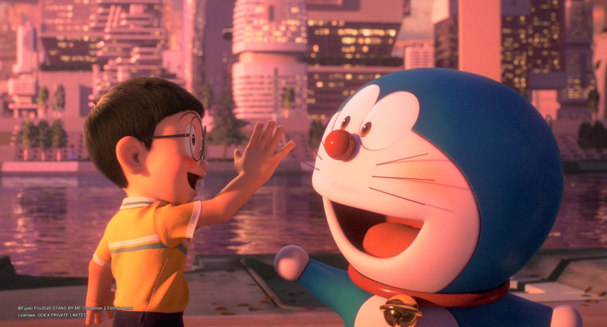
Shizuka Minamoto
"She's everything to me. But if I really care about Shizuka, she's better off without me."
— Nobita, Stand by Me Doraemon
Shizuka is Nobita's childhood friend whom he's had a crush on for a very long time. He often uses Doraemon's gadgets to impress or help Shizuka but is trumped by Dekisugi Hidetoshi. Despite this, Nobita will eventually marry Shizuka and have a child named Nobisuke. Shizuka starts off as a friend to him, but eventually develops a secret crush on him (in Doraemon: Nobita's Three Visionary Swordsmen, Shizuka dreamed she was Princess Shizuka, married Nobita, whom she dreamed he was Silver Knight Nobitania). Sometimes Nobita is seen walking through the Anywhere Door (Doko Demo Doa in Japanese) and witnessing Shizuka taking a bath purposely or accidentally. Whenever Nobita doesn’t stop looking at Shizuka while bathing and continues blabbing or something else, she literally smacks him, splashes him with water, and/or throws a lot of things at him until he leaves. Whenever Nobita says something rude either purposely or accidentally, Shizuka would take offense to the point of snubbing and leaving him for his bluntness and rudeness, which leaves Nobita feeling stupid and guilty for driving her away. While they quarrel very rarely, by the end of the episode they usually makeup and become friends again.
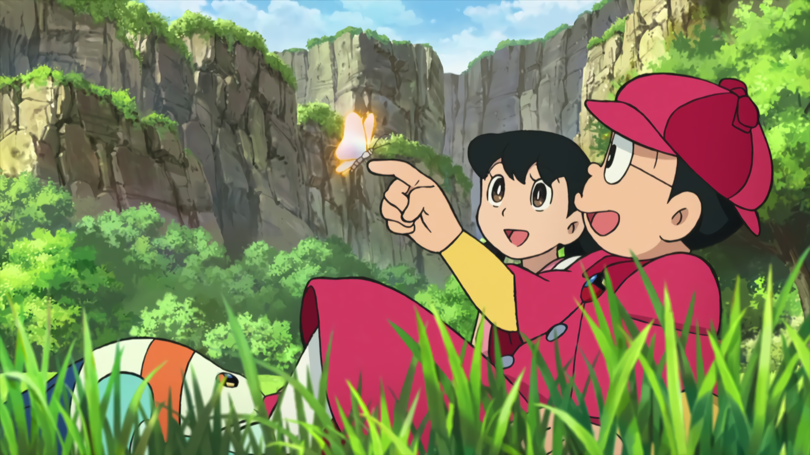
In the episode The Two Shizuka-chan, Shizuka and Nobita went shopping together and Nobita bought a gadget that could create a clone of any person but an aggressive one. He gave it to Shizuka, who created a clone of herself because Nobita was bad at shopping and was easily bored. Shizuka's clone was aggressive and kept pushing Nobita to search clothes for Shizuka, who had kept on bringing babyish clothes for her and when he found a good t-shirt he accidentally gave it to a girl with the same hairstyle as Shizuka but with different clothes. Shizuka's clone saw this and got angry at Nobita for not knowing Shizuka's clothes. Shizuka and her clone abandoned Nobita and continued shopping. Nobita was sitting on a bench in the mall and he saw Shizuka and her clone fighting. Shizuka's clone was grabbing Shizuka's arm and forcing her to buy an inappropriate t-shirt.
Nobita saw this and told Shizuka to make her clone disappear with the gadget he gave her to borrow for some time. Shizuka took out the gadget and her clone snatched it but it fell on the ground and Nobita retrieved it. When he looked at Shizuka he noticed that two copies were preent. He got confused and started asking them questions about his test and the food that he likes a lot. Both Shizukas answered the questions correctly, so he instead asked if Shizuka liked him and both of them started blushing. One of them said 'I-like' and the other said 'Oh God, Shizuka! Don't tell me that you like a dumb boy like him!', which allowed Nobita to identify the latter as the impostor, which the real Shizuka promptly destroys. This is one of the many pieces of evidence that Shizuka really likes Nobita.
Takeshi Gouda
"Nobita, I actually really want to be friends but I wouldn't admit it..."
— Gian's true feelings about as seen in one 1979 anime episode
While Gian is typically a bully that torments him, their relationship is somewhat good as
sometimes they gang up on Suneo, and (though slightly forceful) Nobita tries to help Gian if
possible. He often gets beaten by Gian, who even said: "If I don't bully Nobita a day, I
can't eat and sleep any more." Gian has many reasons or none for constantly wanting to beat
up Nobita, such as whenever Nobita teases him, being blunt, and ruining his day either
purposely or accidentally. Basically, Gian thinks he is trying to teach Nobita a lesson in
being more respectful to him or simply he takes so much joy in making Nobita even more
miserable than before. Gian can be extremely dependent on Nobita and always asks or tells
him to do whatever he wants and gives him the most impossible tasks. Nobita claims that he
hates Gian so much that he wanted him to get him out of his life forever.
In most films, Gian is notably less hostile to Nobita.
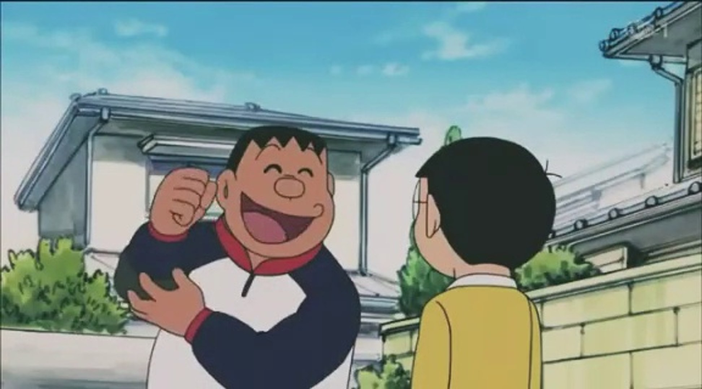
Suneo Honekawa
"Here, you can read my comic! I'll get some snacks for you!"
— Suneo to Nobita after Nobita rescued him from being beat up by Gian
Nobita's arch-rival and friend. He is a fox-faced rich kid who loves to flaunt his material wealth with everyone, which makes Nobita very jealous. He is often seen with Gian, being forced to bully Nobita, though deep down he sometimes actually feels sorry for him. He has a habit of inviting Gian and Shizuka to something or someplace but always leaves Nobita out with a bad reason. While Gian is a bully to Nobita, Suneo is more of an irritant to Nobita due to his arrogant attitude. Suneo sometimes blames Nobita for every bad deed Gian comes to know about, like drawing Gian on the school board, and Nobita usually gets him back with a gadget. They are shown to be laughing and joking together in some scenes, and sometimes they gang up on Gian. Nobita and Suneo are good friends, but sometimes conflicts do arise between them.
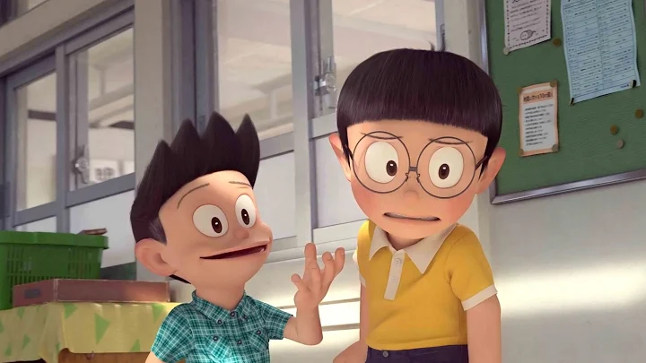
Hidetoshi Dekisugi
"Oh God! Shizuka went off with Dekisugi again!"
— Nobita complaining about Shizuka going with Dekisugi
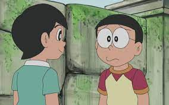
Nobita's one-sided proclaimed eternal rival. He is jealous that Shizuka is friendly to him and that he tends to do better than him at almost everything. They are different in many ways. This jealousy eventually disappears when Nobita grows up and marries Shizuka (proven when Nobita agrees to look after Dekisugi's son, Hideo, when Dekisugi and his wife have to travel to Mars).
Tamako Nobi
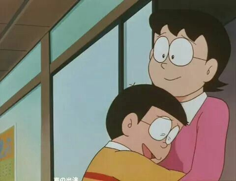
Nobita's mother. She often scolds him for bad results on tests and not doing housework. Still, she sometimes conferences with him about his bad results on tests and not doing housework. For obvious reasons, Nobita views his mother who is brute, mean, heartless, dismissive, and unsympathetic who wants to make Nobita suffer to the point of apologizing to her for no reason, but she really wants what is best for him. He even believes that she is more terrifying than anything else, including monsters.
Nobisuke Nobi
Nobita's father. He usually goes to work and sometimes sees him when he is at home. He is caring and less strict than Nobita's Mother. He tends to be adventurous and encourages his son to be so. He shows complete trust in both Nobita and Doraemon. Even though there are moments where he has been angry at Nobita, he feels guilty about it later. He is in the same league as Nobita when he faces Tamako Nobi . Nevertheless he is shown always compassionate to his family
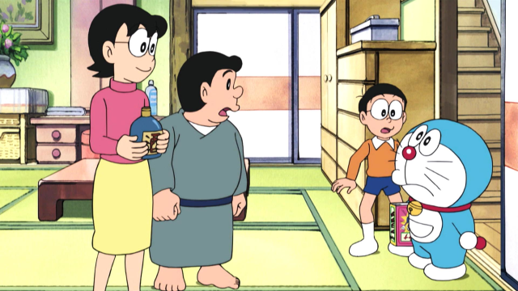
Gallery
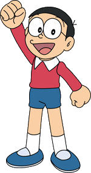
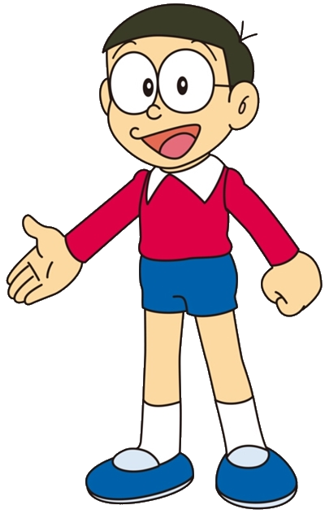
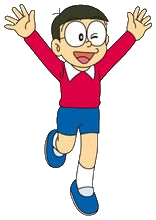
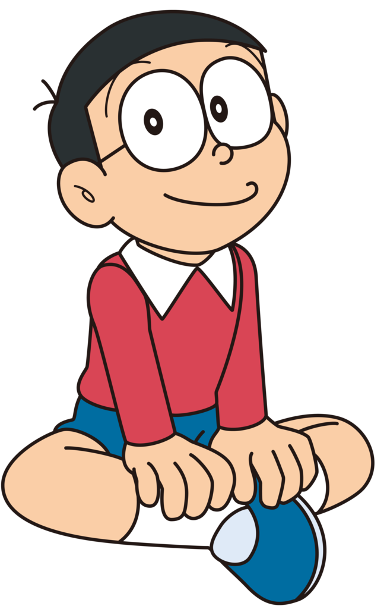
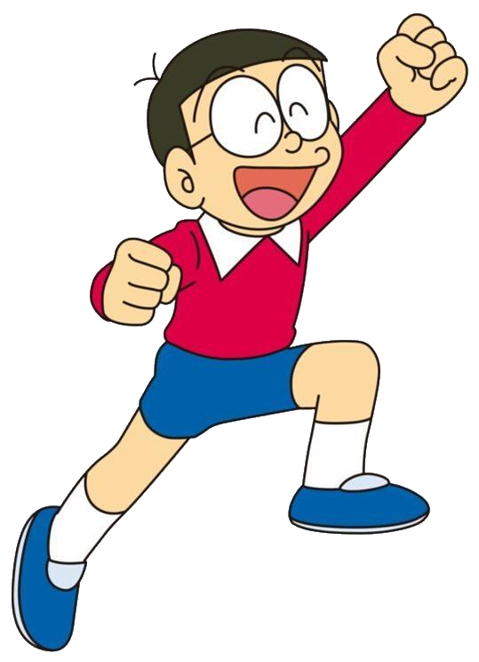
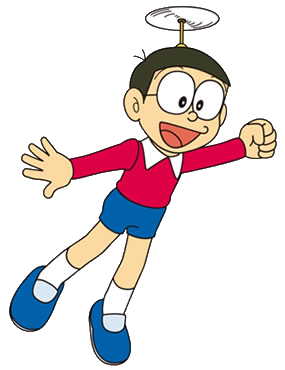